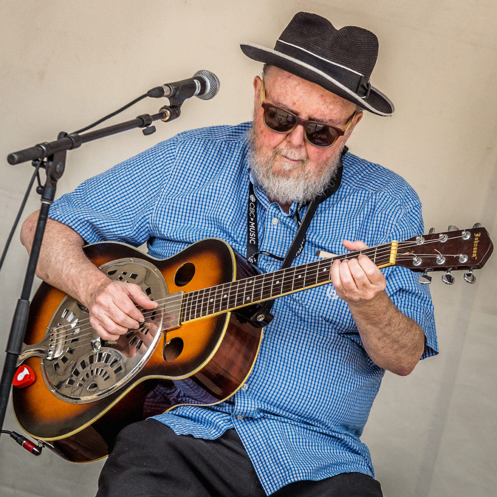

Brian Blain

Originally from the hills of rural Quebec, now based in Toronto, Brian Blain has been performing his unique brand of slow-cooked, solid-groove folk blues for more than 40 years - soulful, thoughtful, always entertaining.
Ever since his 1973 recording, "The Story of the Magic Pick"(Good Noise/Polydor), Brian has been providing his wry commentary on the music scene in song. On previous recordings, he's sung about the state of the music business ("Blues is Hurting,“ “Who Paid You To Give Me The Blues,“ “One More Weasel“) and on the current recording he tells the near-death story of his former label in “The Day Coke Saved The Blues.“
“New Folk Blues“ was released in 2011 as a live, solo album (with George Koller on bass). The “live“ album became a “living“ album as Brian spent the last year adding new instrumentation on all the songs. It starts with New Orleans marching horns from Alison Young and Colleen Allen (the Blainettes horns) on "Forgotten", “Another Song About Alice“ gets violin and banjo from Drew Jurecka and Tim Posgate. There's a reggae percussion work-out with Trinidadian Wayne Stoute and the wonderful Michelle Josef, some sweet slide from Harry Manx on a French tune, barrelhouse piano from Toronto expat Patrick Godfrey and organ grooves galore from Australian Hammond B3 sensation Clayton Doley. "The Ghost of Clinton's Tavern" is a full-tilt electronic ambient remix by Blain's son Joel.